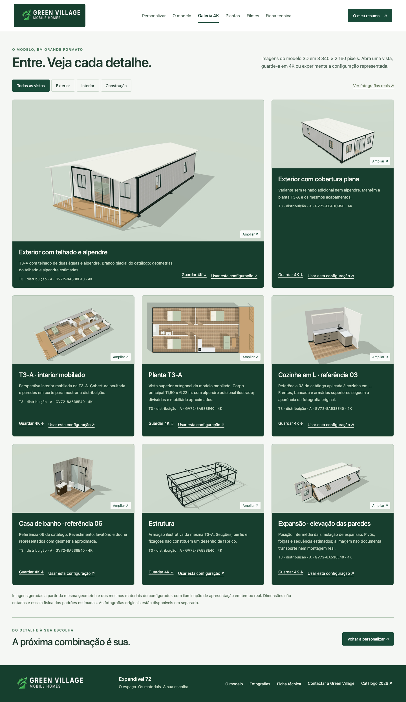
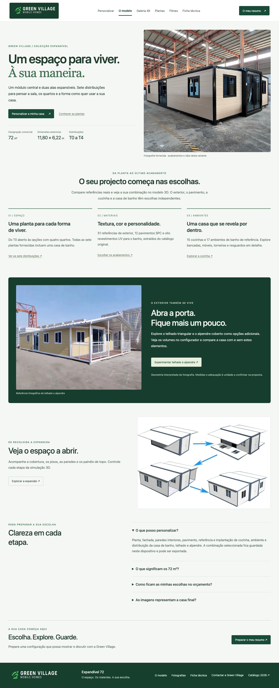

EXPANDÍVEL 72 / REVISÃO DA APRESENTAÇÃO · 10 SETEMBRO 2026
Marca, apresentação e escolhas verificáveis.
A revisão R7 acrescenta uma apresentação comercial ao estúdio existente: logótipo original, página do modelo, galeria 4K, referências de materiais mais legíveis e um resumo de quatro páginas. O modelo geométrico e a expansão corrigidos na revisão R6 foram preservados.
8vistas nativas 3840 × 2160
32grupos de regressão passaram
159PDFs gerados na matriz de teste
Correcções e verificações
| Âmbito | Resultado observado |
|---|
| Marca | O logótipo coincide com o original extraído do catálogo. Contacto confirmado na página 19; nenhuma alegação do modelo de 144 m² foi transferida. |
| Sem cozinha | A referência guardada deixa de ser indicada como aplicada; o cartão fotográfico é omitido do resumo quando a cozinha não está representada. |
| PDF | Quatro páginas: vista, materiais, planta e pormenores. A altura dos cartões considera nomes longos. Caracteres de controlo já não interrompem a exportação. |
| Resumo móvel | Nomes longos quebram dentro dos cartões; o painel cresce sem transbordar sobre o rodapé. Selector de vistas compacto mantém o modelo visível durante a escolha de materiais. |
| Galeria | Oito imagens com configuração validada, dimensões nativas verificadas e originais PNG. Aplicar uma imagem repõe paredes e mobiliário visíveis e o corte previsto. |
| Regressões | 32 grupos passaram: sete plantas, materiais, compatibilidade, portas, movimentos, exportações e activos. A expansão voltou a passar sem regressões de colisão e com componentes rígidos. |
O que foi efectivamente testado
A matriz de PDF cobriu 56 combinações espaciais, as 32 referências de cozinha e banho e as 71 amostras. Os 159 documentos foram gerados e as coordenadas do conteúdo verificadas; amostras normais e casos extremos foram renderizados e inspeccionados visualmente. Não equivale a uma revisão visual individual de cada página de todos os PDFs.
Apresentação e utilização

Galeria com imagens, referências e configuração aplicável ao estúdio.
Apresentação do modelo e fotografia original.Ver o estúdio em telemóvel
Limites das imagens e do modelo
As imagens 4K são renderizações WebGL da geometria existente, com enquadramento e luz de apresentação. Não usam cálculo físico de iluminação por traçado de raios. As amostras originais são fotografias de baixa resolução; a saída 4K não cria detalhe material medido nem calibração física de cor. Medidas interiores, instalações e expansão continuam ilustrativas. A definição comercial de 72 m² e as cotas exteriores 11,80×6,22m mantêm as suas fontes e limites.
Auditoria anterior: portas, materiais e interacções · Voltar ao portefólio